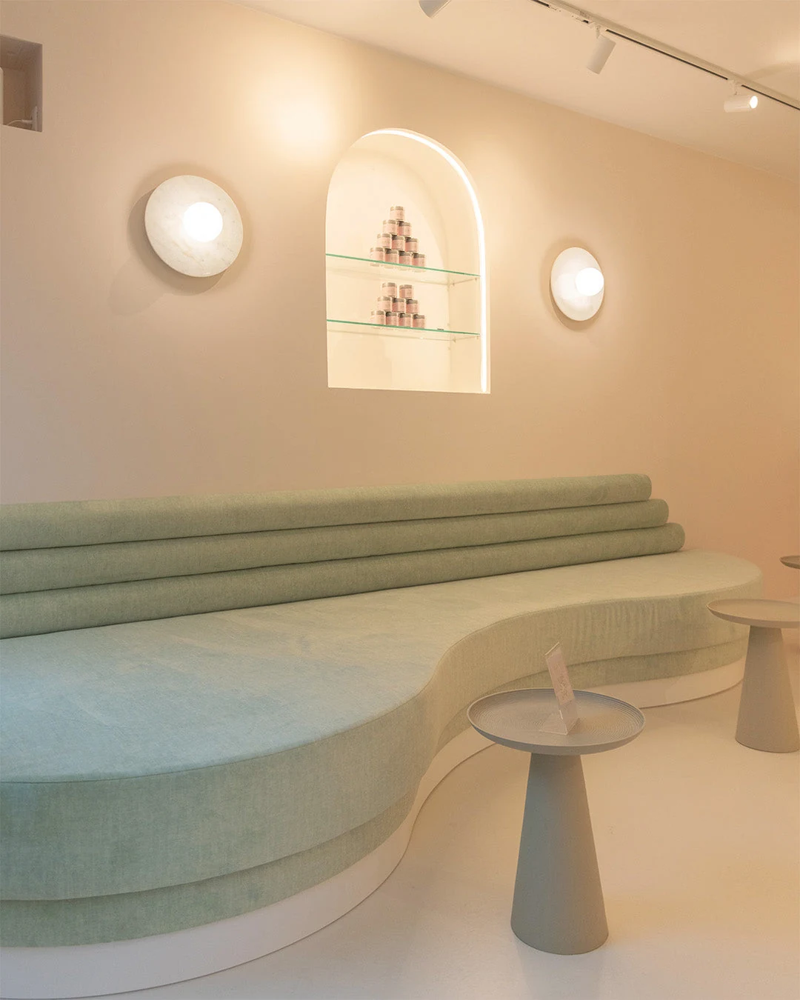
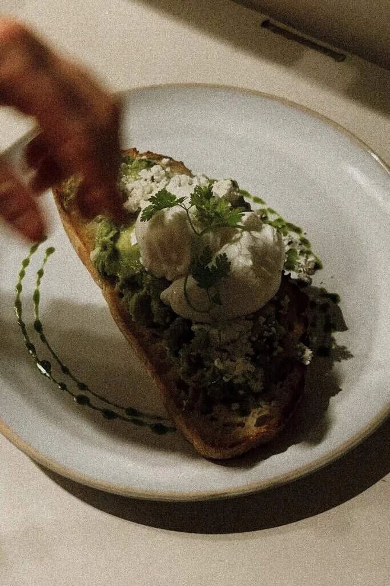
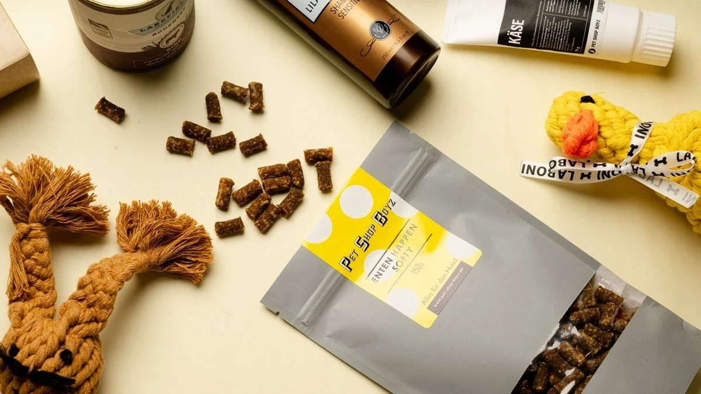
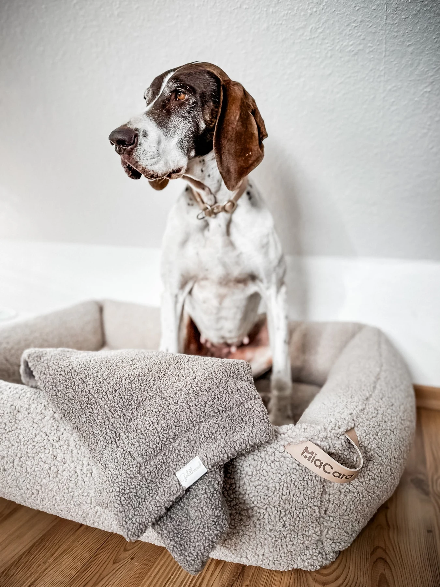
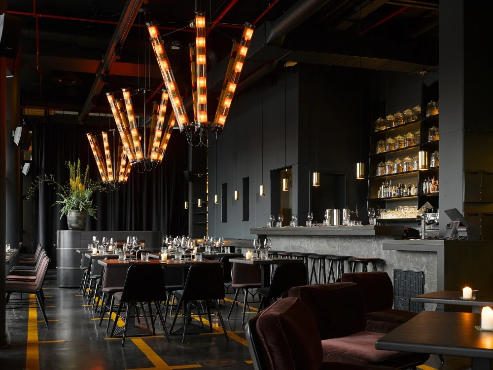

Gotcha Matcha
Café · Eppendorf
A soft-toned matcha café in Eppendorf, with curved seating, Japanese tea and room for a quiet pause together.
Hegestraße 48, 20251 Hamburg
City Edition · Hamburg
Our curated selection of beautiful dog-friendly places in Hamburg.
Explore the five places ↓5 recommendations

Café · Eppendorf
A soft-toned matcha café in Eppendorf, with curved seating, Japanese tea and room for a quiet pause together.

Café · Altstadt
An Australian-inspired café in the old town for specialty coffee, generous breakfasts and something freshly baked.

Dog shop · Harvestehude
A dog concept store on Mittelweg bringing together thoughtful accessories, treats and everyday essentials for dogs and their people.

Dog shop · Winterhude
A considered selection of beds, bowls and walking accessories in Winterhude, with an eye for pieces that feel at home in everyday life.

Restaurant · HafenCity
The warm dining room at 25hours Hotel HafenCity, serving familiar dishes from Germany, Austria and Switzerland beside the harbour.
Coco’s next stop
Share the place’s name and Instagram. Coco and the Guide team will review it before it joins the Guide.